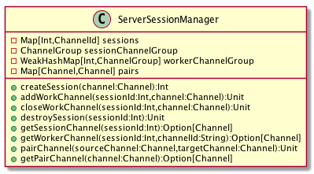

本文是Jtv的开发笔记。Jtv是一个远程桌面工具。
概述
本文记录的是服务端的程序设计。在写完服务端和客户端程序的时候，我发现整个程序对连接的管理不太完善。于是对客户端程序进行了一次重构，采用连接对象对Channel和消息处理回调进行了封装。在考虑服务端程序的重构时，还没有较好的思路，暂时先用这版服务程序了。
设计
功能要求
服务端程序需要处理以下任务：
-
会话和连接的管理：会话连接是个单独的连接，它处理客户端与服务端的命令交互，不参与屏幕和键盘、鼠标事件的传输。客户端进行点对点连接等操作时，由会话连接进行协调来建立点对点连接。
-
点对点消息的传输：当前这版未重构的程序是使用连接对来处理点对点的连接。在会话连接和服务程序的协助下，两个客户端之间可以建立起新的点对点连接。经点对点连接发送的消息将被直接发送到另一端，服务端不对消息进行处理。这里有当前版本可以优化的一个点，在点对点连接建立之后，pipeline应该可以进行动态调节，减少消息的编码和解码开销。
-
管理会话及其连接：管理会话、会话连接、点对点工作连接。在连接中断时，自动从会话的工作连接中移除。如果中断的是会话连接，则应该关闭所有与这个会话相关联的连接，关闭与这个会话中任何一个连接建立的点对点连接。
实现
会话管理
服务端的会话和连接由会话管理器ServerSessionManager进行管理，它的结构如下：

主要属性：
sessions: 保存会话连接的Map，键为会话ID,值为ChannelId。sessionChannelGroup: 保存所有会话连接的ChannelGroup。workerChannelGroups: 保存会话相关连接的Map，键为会话ID,值为与此会话相关的连接（ChannelGroup，不含会话连接本身）
会话创建的过程：
1
2
3
4
5
6
7
8
9
10
11
12
13
14
15
16
17
18
19
20
21
22
23
24
25
26
|
def createSession(channel:Channel): Int ={
val sessionId = nextSessionId
ChannelUtils.setSessionId(channel,sessionId)
sessionChannelGroup.add(channel)
sessions.put(sessionId,channel.id())
workerChannelGroups.put(sessionId,new DefaultChannelGroup(GlobalEventExecutor.INSTANCE))
//会话连接关闭
channel.closeFuture().addListener(
(future:ChannelFuture) => {
sessionChannelGroup.remove(future.channel().id())
sessions.remove(sessionId)
logger.info(s"会话${sessionId}的主连接${future.channel().id().asLongText()}被关闭")
//关闭工作连接
workerChannelGroups.get(sessionId).foreach(channelGroup =>{
channelGroup.writeAndFlush(ErrorMessage("会话关闭!"))
if(!channelGroup.isEmpty){
logger.info(s"会话${sessionId}的所工作连接即将被关闭...")
channelGroup.close()
}
workerChannelGroups.remove(sessionId)
})
})
sessionId
}
|
会话连接创建时，不只是在相关的Map和ChannelGroup中保存本连接。通过在会话连接上添加closeFuture监听，在关闭事件产生时，可以关闭会话相关的连接，清理会话相关的Map和ChannelGroup。
工作连接的创建
1
2
3
4
5
6
7
8
9
10
11
12
13
14
15
16
17
18
19
20
|
def addWorkChannel(sessionId:Int,channel:Channel)={
workerChannelGroups.get(sessionId).foreach(channelGroup =>{
ChannelUtils.setSessionId(channel,sessionId)
channelGroup.add(channel)
//工作连接关闭
channel.closeFuture().addListener((future: ChannelFuture) => {
logger.info(s"会话${sessionId}的工作连接${future.channel().id().asLongText()}被关闭")
//从会话工作连接中清除
ChannelUtils.getSessionId(future.channel()).foreach(workerChannelGroups.get(_).foreach(_.remove(future.channel())))
//关闭对向连接
getPairChannel(future.channel()).foreach(channel=>{
channel.writeAndFlush(ErrorMessage("连接中断!"))
logger.info(s"会话${sessionId}工作连接${future.channel().id().asLongText()}的连接对${channel.id().asLongText()}即将被关闭...")
channel.close()
})
})
})
}
|
工作连接创建时，将被添加至对应的会话。在它被关闭时，需要从相关的会话中清除。如果它是点对点连接的一端，另一端的连接也应该被闭关。
会话销毁
1
2
3
4
5
6
7
8
9
|
def destroySession(sessionId:Int): Unit ={
sessions.get(sessionId).foreach(channelId=>{
val channel = sessionChannelGroup.find(channelId)
logger.info(s"会话${sessionId}的主连接即将被关闭...")
channel.writeAndFlush(ErrorMessage("会话关闭!"))
channel.close()
})
}
|
由于前面建立连接的时候，我们已经添加了关闭事件监听，在其中对相关的资源进行了清理。因此，在会话销毁时，我们就只需要关闭会话相关的连接就可以了。
点对点连接对
连接对就只是一个简单的Map，它的key和value都是ChannelId。点对点连接对建立时，向Map中写入两条记录，以保证从连接的任一端都能找到另一端。
1
2
3
4
|
def pairChannels(sourceChannel:Channel,targetChannel:Channel): Unit ={
pairs.put(sourceChannel,targetChannel)
pairs.put(targetChannel,sourceChannel)
}
|
服务端消息处理
前一篇文章我们已经介绍过网络层的结构，在网络层已经处理好消息的编码、解码和数据的序列化。在编写服务端的Handler的时候，就比较简单了，只需要根据消息类型调用对应的处理逻辑。
1
2
3
4
5
6
7
8
9
10
11
12
13
14
15
16
17
18
19
20
21
22
23
24
25
26
27
28
29
30
31
32
33
34
35
36
37
38
39
40
41
42
43
44
45
46
47
48
49
50
51
52
53
54
55
56
57
|
class ServerHandler extends SimpleChannelInboundHandler[JtvMessage]{
private val logger = Logger(classOf[ServerHandler])
override def channelRead0(ctx: ChannelHandlerContext, msg: JtvMessage): Unit = {
logger.info(s"接收消息:${msg}")
val sid = ChannelUtils.getSessionId(ctx.channel())
/*if(sid==None && !(msg.isInstanceOf[LoginRequest])){
ctx.channel().writeAndFlush(ErrorMessage("未登录"))
ctx.channel().close()
return
}*/
msg match {
case m:LoginRequest => {
JtvServerManager.login(ctx,m)
}
case m:LogoutRequest =>{
JtvServerManager.logout(ctx,m)
}
case m:ControlRequest => {
JtvServerManager.controlReq(ctx,m)
}
case m:ControlResponse => {
JtvServerManager.controlResp(ctx,m)
}
case m:ScreenCaptureMessage =>{
JtvServerManager.routeMessage(ctx,m)
}
case m:MouseEventMessage =>{
JtvServerManager.routeMessage(ctx,m)
}
case m:KeyEventMessage =>{
JtvServerManager.routeMessage(ctx,m)
}
case _ => {
logger.info(s"无法识别的消息，关闭连接${ctx.channel().id().asLongText()}")
ctx.close()
}
}
}
override def channelActive(ctx: ChannelHandlerContext): Unit = {
super.channelActive(ctx)
logger.info(s"新连接：${ctx.channel().id().asLongText()}")
}
override def channelInactive(ctx: ChannelHandlerContext): Unit = {
super.channelInactive(ctx)
logger.info(s"连接断开:${ctx.channel().id().asLongText()}")
ctx.channel().close()
}
}
|